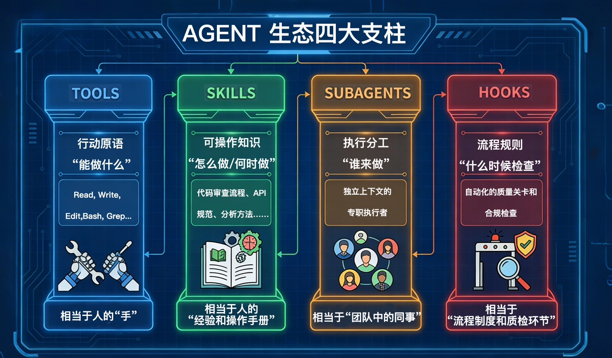
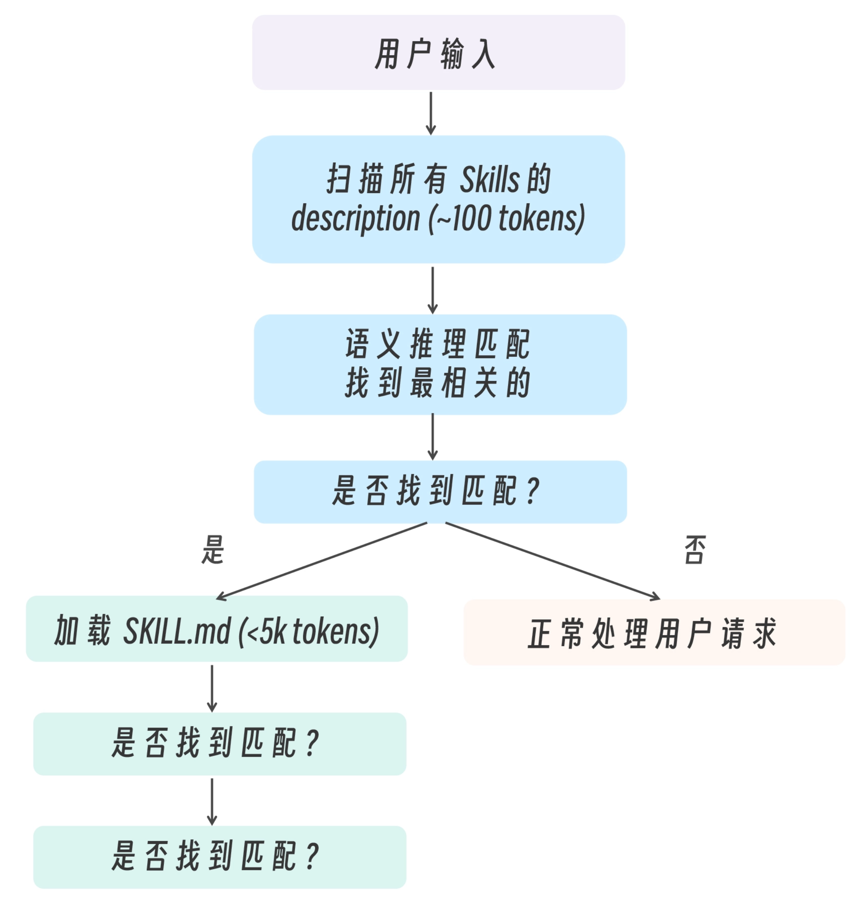
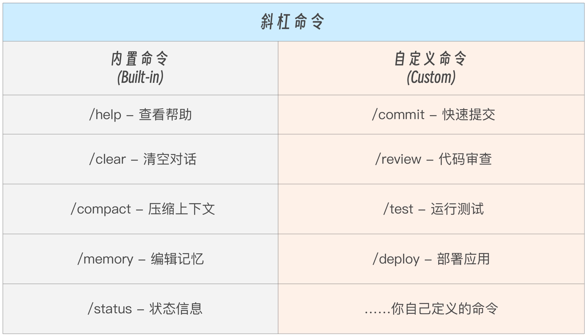
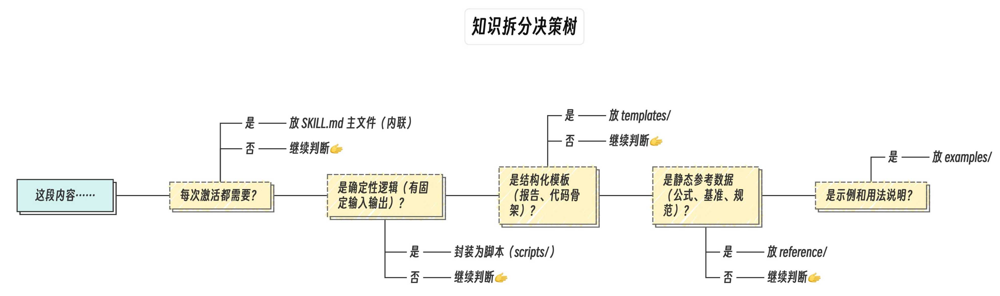
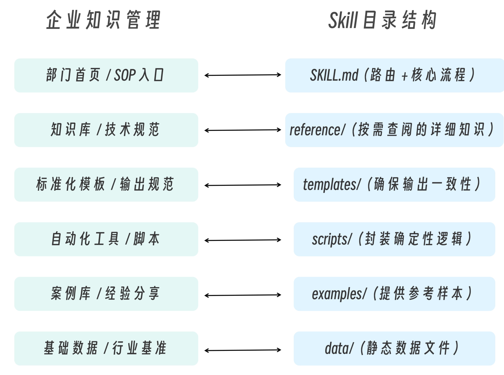
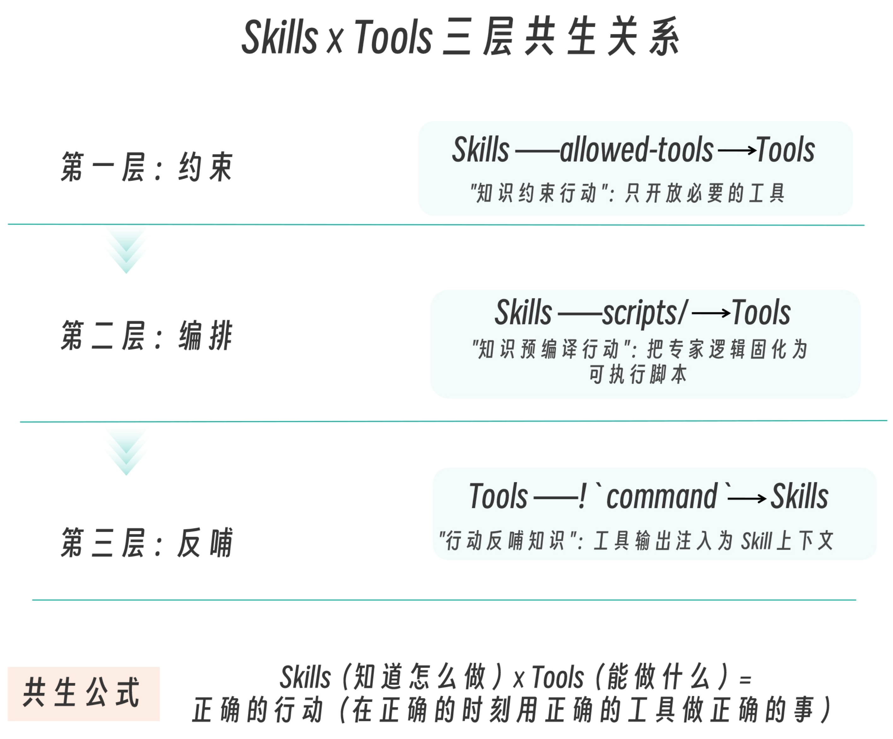
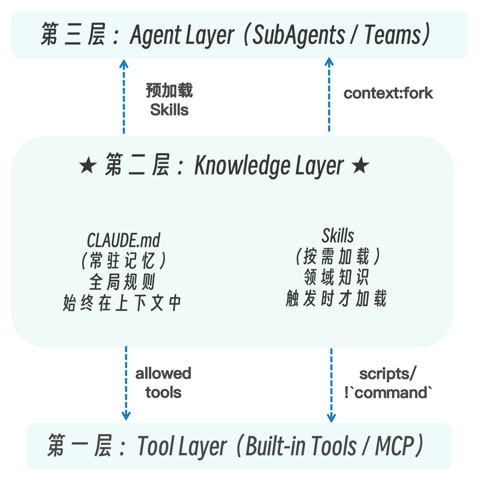
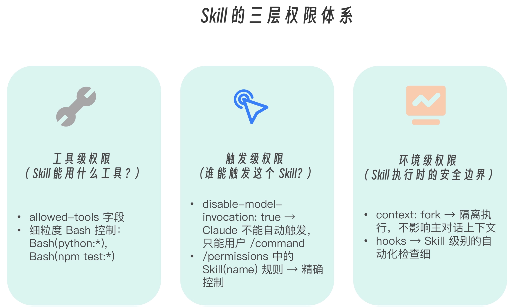
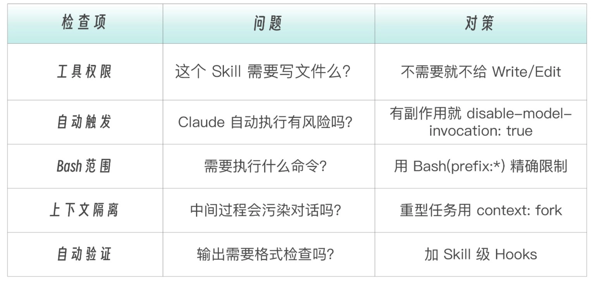

从第一性原理来理解什么是 Skills
在真实的工程团队里，很少有人能够把所有规范背下来。
代码风格指南十几页，Git 提交规范三四种类型，API 设计有版本约定，安全审查有检查清单，部署流程有风险控制条款……这些规则并不复杂，但数量一多，就不可能长期驻留在脑中。人类工程师的做法很简单：需要时再查阅。
如果我们把 Claude 当作真正的工程助手，它也会面临同样的问题。最直接的做法，是把所有团队规范写进 CLAUDE.md，让模型每次对话都读取这些内容。短期看这是可行的。但当知识规模扩大到几十页甚至上百页时，问题就出现了——每一次对话都在为“可能用不到的知识”支付上下文成本。这不仅消耗 tokens，更重要的是，它会稀释模型的注意力。真正需要用到的规则，反而淹没在冗余信息里。
这正是 Skills 出现的背景。
Skills 并不是简单的“能力扩展机制”，它本质上是一种按需加载的认知结构。与其把所有知识常驻在上下文中，不如把它们封装成可独立触发的能力单元。当模型判断当前任务涉及某个特定领域时，再加载对应的知识与操作流程。
因此，我们可以给 Skills 一个更精确的定义：Skills 是一种可被语义触发的能力包，它包含领域知识、执行步骤、输出规范与约束条件，并在需要时渐进式加载到主 Agent 的认知空间中。
如果我们把 Agent 生态整体展开来看，会发现 Skills 并不是孤立存在的。Agent 生态中有四大支柱，每个都解决了一个根本性问题。

- Tools 是行动原语。它回答的是能做什么。读文件、改代码、执行 Bash 命令……这些是操作层面的能力，类似人的双手。
- SubAgents 是执行分工。它回答的是谁来做。当任务复杂到需要独立上下文时，子代理承担专职职责，类似团队中的同事。
- Hooks 是流程规则。它回答的是什么时候检查。它们在关键节点自动触发质量校验或合规约束，类似企业中的质检流程。
- 而 Skills 回答的，是另外一个非常关键的问题：“怎么做，以及何时做”，它不是工具，也不是分工机制。它是一种可操作知识结构。
Skills 解决的核心问题是，在有限的上下文窗口中，让 Agent 在正确的时刻拥有正确的领域知识。
这不是工具问题（Tools 回答“能做什么”），也不是分工问题（SubAgents 回答“谁来做”），而是认知问题——Agent 需要知道特定领域的规范、流程、模式，才能做出正确决策。
Skills 的结构
文件夹目录框架
一个 Skill 就是一个文件夹，文件夹里面放着跟这个业务流程相关的所有东西：说明、案例、静态资源、代码脚本等
其中 SKILL.md 文件是必须有的，剩余的文件夹按需
test-skill/
├── SKILL.md # 核心规范文件，必需
├── scripts/ # 可选：可执行的代码脚本
│ └── generate.sh
├── references/ # 可选：长文档、模板、案例
│ └── examples.md
└── assets/ # 可选：静态资源、素材
└── logo.png
Skill 的文件夹结构采用模块化设计，将不同类型的资源分离存放，便于管理和维护。
SKILL.md 是唯一必需的文件
模型最先读取的就是这个文件，来判断是否要使用这个 Skill
它由两部分组成：头部元数据+详细说明/步骤
---
name: your-skill-name
description: 描述这个 skill 是做什么的，在什么场景和情况会被调用，例如关键词触发等
---
# Skill 标题
这里开始写你的流程、步骤、输入输出、示例等。
Claude 启动时只加载所有 skills 的 name 和 description。
它就是靠 description 来判断“何时用这个 skill”，所以 description 尽量包括：Skill是做什么的，使用场景是什么，用户在想调用的时候会说什么（可以写一些固定的触发关键词：当用户说明“帮我xxxxx”时，调用skill）
它通过 description 告诉模型：在什么情况下应该加载这项能力。它在正文中定义执行步骤，将抽象原则转化为可执行流程。它通过模板约束输出格式，确保结果标准化。它可以限制可调用工具的范围，防止越权操作。它甚至可以通过 hooks 在完成后自动执行验证逻辑。
好的 description 要包含具体动作词和触发词，并且让不同 skills 的触发词尽量互相区分。保证描述的唯一性，AI才能区分不同的Skill
如何安装 skills
一个神级 skills 安装工具！地址：https://github.com/vercel-labs/skills
vercel 最新出的 skills 安装工具，一键安装，支持通过命令行直接在 30+种 coding agnet 里安装 skills，无论你用的是 claudecode、opencode、codex、gemini-cli、codebuddy、cursor、antigravity、kilo、droid，通通直接安装！
- 尽量不要全局安装 skills，特别是带有特定业务场景下才使用的 skill，防止模型跑任务的时候乱激活；
- 同一个项目内不要安装超过 10 个 skills，容易串；
- 尽量不要做 skill 激活 skill 的流程，容易套娃引用，推荐在 AGENT.md 或者 CLAUDE.md 里声明已安装 skills 的使用场景及使用流程。
Skills 安装位置
Skill 的安装通常很简单，将包含 SKILL.md 的文件夹放入 Claude 的 Skills 目录即可。不同的 Claude 客户端可能有不同的安装路径，但核心原则一致：将 Skill 文件夹放在指定的 skills 目录下，Claude 启动时会自动扫描并加载。
对于 Claude Code 等工具，通常支持通过命令行或配置文件中指定 skills 目录路径，AI 会在启动时自动识别该目录下的所有 Skill。
Skills 的安装分两种存储位置
- 全局安装
- 项目级安装
全局安装指的是 Skills 直接安装在 Claude code 的程序主文件夹
通常是这个位置~/.claude/skills/
直接把 skills 的文件夹丢进去就可以了
项目级安装就是把技能安装到当前Claude打开的项目里。
可以看你当前打开的文件夹中，是否有 .claude 这个文件夹，没有的话自己建一个，在文件夹里再创建一个skills 文件夹，之后的Skill都放到这个文件夹里。
去哪找现成的Skills
官方示例
vercel 官方做的网站 https://skills.sh/
Anthropic 官方仓库 https://github.com/anthropics/skills/tree/main/skills
Github社区精选Skills
https://github.com/travisvn/awesome-claude-skills
他人分享
-
一个韩国小哥做的网站 skillsmp.com。这个网站什么 skill 都有，基本上属于全收录，但是也没有官方背书，所以你得自己精挑细选。
-
superpowers
- 地址：https://github.com/obra/superpowers
- 介绍：这也是一个做网站用的 skills 集合，我特别喜欢 brainstorming 这个 skill，我有很多点子都是靠这个玩意帮我做的。
常用 skills
-
Brainstorming
- 来源：superpowers
- 说明：头脑风暴 skill，能提出很多好点子；
- 使用场景：如果觉得自己不太有想法，可以使用这个
-
npx skills add https://github.com/obra/superpowers --skill brainstorming
-
Doc-coauthoring
- 来源：Anthropic 官方
- 文档撰写 skills，先出大纲，然后分章书写，写的老好了，基本都在你的控制范围里；
-
npx skills add https://github.com/anthropics/skills --skill doc-coauthoring
-
Web-design-guidelines
- 来源：vercel
- 做网页设计的时候使用，会有更好的布局思路；
-
npx skills add https://github.com/vercel-labs/agent-skills --skill web-design-guidelines
-
Frontend-design
- 来源：Anthropic 官方
- 前端设计，可以和 web-design-guidelines 联合使用；
-
npx skills add https://github.com/anthropics/skills --skill frontend-design
-
Shadcn-ui:
- 说明：如果你的网站使用了 shadcn/UI，可以考虑装这个 skill，它会自动根据你的网页布局写 shadcn 的组件并嵌入到网站里，不会直接在页面上写死内容；
-
npx skills add https://github.com/giuseppe-trisciuoglio/developer-kit --skill shadcn-ui
-
Vercel-react-best-practices
- 说明：网站写完了之后用这个 skill 检查，可以查出来很多结构问题、布局问题以及样式问题，效果还是很不错的，推荐使用 codex 跑这个 skill；
-
npx skills add https://github.com/vercel-labs/agent-skills --skill vercel-react-best-practices
-
seo-audit:
- seo 审查 skill，网站全部做完了之后跑一遍 seo 审查 skill，网站全部做完了之后跑一遍metadata、robots.txt、sitemap，还有网站内页的 keywords、标题等等，总之跑两边循环把该改的改了。
-
npx skills add https://github.com/coreyhaines31/marketingskills --skill seo-audit - 如果你不做 AI 应用出海，你可以根据自己实际的业务考虑其他的 skills，例如大家所熟悉的 baoyu-skills（地址：https://github.com/JimLiu/baoyu-skills），这个里面内容生成，做自媒体的就比较多。
-
baoyu-post-to-wechat
- 如果你是公众号内容创作者，那这个肯定必不可少。这个就是去发布微信公众号文章的
-
npx skills add JimLiu/baoyu-skills --skill baoyu-post-to-wechat
-
baoyu-xhs-images
- 生成小红书信息图系列（1-10 张），支持 11 种视觉样式和 8 种布局
-
npx skills add JimLiu/baoyu-skills --skill baoyu-xhs-images
-
baoyu-post-to-x
- 发布内容到 X （Twitter），支持文章和带图/视频推文
-
npx skills add JimLiu/baoyu-skills --skill baoyu-post-to-x
-
baoyu-cover-image
- baoyu-cover-image
-
npx skills add JimLiu/baoyu-skills --skill baoyu-cover-image
-
baoyu-comic
- 知识漫画创作，支持多种艺术风格（Logicomix/Ohmsha 风格）
-
npx skills add JimLiu/baoyu-skills --skill baoyu-comic
深入理解 Skill 触发机制
在 Claude Code 中，Skills 默认情况下支持两种触发方式。
- 用户显式触发：输入/skill-name
- 分层评审：Claude 读取 description，语义匹配后自动加载
这是 Skills 最重要的设计特性——同一个 Skill 既可以作为斜杠命令使用，也可以让 Claude 自动判断何时需要。
为什么要这样设计？ 用户有时知道自己要什么（/review），有时只是描述需求（“帮我看看代码“）。Skills 的双向触发机制让两种场景都能被满足，同时保持能力定义的统一。
当用户发送消息时，Claude 的处理流程如下图所示：

渐进式加载时 Token 的节省比例高达 78% ~ 98%。这就是为什么 Skills 采用“渐进式披露”而非“一次性加载”。
当用户请求可能匹配多个 Skills 时，Claude 会：
- 评估每个 Skill 的 description 与用户请求的相关性。
- 选择最相关的那个。
- 如果不确定，可能会询问用户或使用通用方式处理。
设有 disable-model-invocation: true 的 Skill，其 description 不会加载到上下文——Claude 完全看不到它，只有用户 /name 才能触发。
另外，可以采用三种方式来控制 Claude 对 Skills 的访问。
- 全局禁用：在 /permissions 中 deny Skill 工具
- 精确控制：Skill(commit) 精确匹配，Skill(deploy *) 前缀匹配
- 逐个控制：给 Skill 加 disable-model-invocation: true frontmatter
# 权限规则示例
Skill(commit) # 允许 Claude 使用 commit skill
Skill(review-pr *) # 允许 Claude 使用 review-pr skill（带任意参数）
Skill(deploy *) # 拒绝 Claude 使用 deploy skill（放在 deny 列表）
好的 Skill 设计遵循“导航页 + 详情页”模式
SKILL.md ← 导航页：概述 + 引用（< 500 行）
├── reference.md ← 详情页：详细 API 文档
├── examples.md ← 详情页：使用示例
└── scripts/validate.sh ← 工具：可执行脚本
注意：SKILL.md 应该被控制在 500 行以内。如果过于复杂，应该将详细参考资料移到独立文件，并在 SKILL.md 中进行引用（也就是我们所常说的渐进式加载）。
Skills 的存放位置决定了谁能使用它，以及优先级顺序。
| 层级 | 路径 | 作用域 | 是否共享 |
|---|---|---|---|
| Enterpise | 由管理员配置 | 组织内所有用户 | 是（集中管理） |
| 用户级 | ~/.claude/skills/[skill-name]/SKILL.md | 所有项目 | 否（个人） |
| 项目级 | .claude/skills/[skill-name]/SKILL.md | 当前项目 | 是（提交到 git） |
| 插件级 | [plugin]/skills/[skill-name]/SKILL.md | 启用插件的场景 | 通过插件市场分发 |
| 同名优先级：Enterprise > Personal > Project。Plugin Skills 使用 plugin-name:skill-name 命名空间，不与其他级别冲突。 |
当你在子目录（如 packages/frontend/）中工作时，Claude Code 会自动发现该目录下的 .claude/skills/。这种 monorepo 的 Skills 自动发现机制让 monorepo 中的每个 package 都可以有自己的 Skills。
两大类型的 Skills：参考型和任务型
从工程角度，Skill 内容分为两类，参考型和任务型。参考型 Skill 影响“怎么做”，任务型 Skill 决定“做什么”。前者是语义环境，后者是具体行动。
在写 description 时需要明确它属于哪种类型。
| 类型 | 特征 | description 重点 | 典型例子 |
|---|---|---|---|
| 参考型（Reference） | 提供知识，Claude 在当前对话中应用 | 强调“在什么场景下应用这些知识” | API 规范、代码风格、领域知识 |
| 任务型（Task） | 执行具体操作步骤 | 强调“这个操作做什么”，常配合 disable-model-invocation: true（之前的斜杠命令 /command。其实注意就被整合进入了任务型 Skill） | 部署流程、提交规范、代码生成 |
# 参考型——Claude 自动选择是否使用
name: api-conventions
description: API design patterns for this codebase. Use when writing or reviewing API endpoints.
# 任务型——通常由用户手动触发
name: deploy
description: Deploy the application to production
disable-model-invocation: true
从企业本体论的视角看，所谓“参考型”和“任务型”Skill，其实对应的是两种不同的组织存在方式。
参考型 Skill 更像组织的行为规范层。它定义“在这个世界里，什么是正确的做法”——例如 API 设计标准、代码风格、错误处理约定。这类 Skill 通常由模型根据语义自动判断是否加载，它不主导行动，而是塑造行动的方式。它属于“世界规则”。
任务型 Skill 则更像组织的操作流程层。它定义一次明确的行动——部署、发布、迁移、生成报告等。这类行为具有边界和风险，通常需要显式触发，因此常配合 disable-model-invocation 使用。它属于“世界事件”。
创建一个参考型 SKILL.md 文件：api-conventions
在 Claude Code 中，每个 Skill 独占一个目录。其标准的目录和文件结构如下：.claude/skills//SKILL.md。
因此，首先要在项目中创建一个以 skill 名称命名的目录。里面放 SKILL.md 文件。
我们即将要创建的这个参考型 Skill 是一个“API 设计规范”：
.claude/skills/api-conventions/ # skill 目录，名称即 skill 名
└── SKILL.md # 主文件（必需）
---
name: api-conventions
description: API design patterns and conventions for this project. Covers RESTful URL naming, response format standards, error handling, and authentication requirements. Use when writing or reviewing API endpoints, designing new APIs, or making decisions about request/response formats.
allowed-tools:
- Read
- Grep
- Glob
---
# API Design Conventions
These are the API design standards for our project. Apply these conventions whenever working with API endpoints.
## URL Naming
- Use plural nouns for resources: `/users`, `/orders`, `/products`
- Use kebab-case for multi-word resources: `/order-items`, `/user-profiles`
- Nested resources for belongsTo relationships: `/users/{id}/orders`
- Maximum two levels of nesting; beyond that, use query parameters
- Use query parameters for filtering: `/orders?status=active&limit=20`
## Response Format
All API responses must follow this structure:
{
"data": {}, // 成功时返回的数据
"error": null, // 错误时返回错误对象 { code, message, details }
"meta": { // 分页和元信息
"page": 1,
"limit": 20,
"total": 100
}
}
## HTTP Status Codes
- 200: 成功返回数据
- 201: 成功创建资源
- 400: 请求参数错误
- 401: 未认证
- 403: 无权限
- 404: 资源不存在
- 422: 业务逻辑错误
- 500: 服务器内部错误
## Authentication
- All endpoints require Bearer token unless explicitly marked as public
- Public endpoints must be documented with `@public` annotation
- Token format: `Authorization: Bearer <jwt-token>`
## Versioning
- API version in URL path: `/api/v1/users`
- Breaking changes require new version
这个文件有三个部分：
- YAML frontmatter，是通过---包裹的元数据
- Markdown 正文，是技能的具体说明
- 辅助文件：
.claude/skills//SKILL.md——每个 Skill 在自己的目录中，可以包含辅助文件（此处只有主文件，下一讲中的示例我们将看到辅助文件）。
注意这个 Skill 的关键特征——它是一个典型的参考型 Skill。
- 没有执行步骤：不是先做 A 再做 B，而是“遵循这些规范”。
- 没有输出模板：不要求 Claude 输出固定格式的报告。
- 没有设disable-model-invocation：Claude 可以自动判断何时需要。
- 只读工具：allowed-tools 限制为 Read/Grep/Glob，因为规范查阅不需要改代码。
这正是企业本体论的体现——它告诉 Claude 在我们的世界里，API 应该长什么样。
在这里，description 是 Skill 的灵魂，因为它不是给人看的文档，而是给 Claude 看的触发器。Claude 选择是否激活一个 Skill，完全依赖于阅读 description。这不是关键词匹配，而是语义理解。
用户输入: "帮我看看这段代码有没有问题"
Claude 思考过程：
1. 扫描所有 Skills 的 description
2. 看到 "code-reviewing" 的 description:
"Review code for quality... Use when the user asks for code review..."
3. 语义推理："看看代码有没有问题" ≈ "code review"
4. 决定：激活这个 Skill
如果你这样写 description，想想看合适么？
description: Handles PDFs
很明显，问题在于太模糊，“handles”是什么意思？读取？转换？合并？Claude 不知道什么时候该用它。用户说“帮我处理这个 PDF”时，Claude 可能不确定这个 Skill 是否合适。
我们再对比一下更好的 description 长什么样。
description: Extract text and tables from PDF files, fill forms, merge documents. Use when working with PDF files or when the user mentions PDFs, forms, or document extraction.
为什么这版更好？因为它列出了具体动作（extract, fill, merge）；包含了用户可能说的关键词（PDF, forms, document extraction）；明确说明了触发场景（“Use when…”）
因此，我给你总结了一个 description 写作公式：
description = [做什么] + [怎么做] + [什么时候用]
套用公式创作几个示例 Skill：
# 代码审查 Skill
description: Review code for quality, security, and best practices. Checks for bugs, performance issues, and style violations. Use when the user asks for code review, wants feedback on their code, mentions reviewing changes, or asks about code quality.
# API 文档 Skill
description: Generate API documentation from code. Extracts endpoints, parameters, and response schemas. Use when the user wants to document APIs, create API reference, generate endpoint documentation, or needs help with OpenAPI/Swagger specs.
# 数据库查询 Skill
description: Query databases and analyze results. Supports SQL generation, query optimization, and result interpretation. Use when the user asks about data, wants to run queries, needs database information, or mentions tables/schemas.
当你有多个 Skills 时，确保它们的 description 有明确区分：
# ❌ 容易冲突
name: unit-testing
description: Write tests for code
name: integration-testing
description: Write tests for code
# ✅ 明确区分
name: unit-testing
description: Write and run unit tests for individual functions. Use for testing single functions or methods in isolation, mocking dependencies, and verifying function behavior.
name: integration-testing
description: Write and run integration tests for system components. Use when testing how multiple components work together, testing API endpoints end-to-end, or verifying database interactions.
Skills Frontmatter 字段详解
Claude Code 官方支持的完整 frontmatter 字段如下。
---
name: my-skill-name # 可选：Skill 标识符（省略则用目录名）
description: What this does # 推荐：触发器（最重要！）
argument-hint: "[issue-number]" # 可选：自动补全时的参数提示
disable-model-invocation: true # 可选：禁止 Claude 自动触发
user-invocable: false # 可选：对用户隐藏 /skill-name
allowed-tools: # 可选：限制可用工具
- Read
- Grep
- Glob
model: sonnet # 可选：指定执行模型
context: fork # 可选：在子代理中隔离执行
agent: Explore # 可选：context: fork 时的代理类型
hooks: # 可选：作用域为此 Skill 的 Hooks
PreToolUse:
- matcher: Write
hooks:
- type: command
command: "echo 'Write called in skill'"
---
其中所有字段都是可选的，但强烈建议提供 description，否则 Claude 无法判断何时使用。
让我逐一解释核心字段：
- name 字段：最大 64 字符，只能使用小写字母、数字、连字符，推荐使用动名词形式：code-reviewing、api-documenting、bug-fixing。如果省略了这个字段（通常不大可能啦），则自动使用目录名（.claude/skills/code-reviewing/ → name 为 code-reviewing）
- description 字段：这是最重要的字段——它决定 Skill 何时被触发。这个字段应该包含两部分信息：这个 Skill 做什么，以及什么情况下使用它。如果省略了这个字段（也不大可能啦），系统会使用 Markdown 正文的第一段作为 description。
注意：所有 Skill 的 description 会被加载到上下文中供 Claude 判断选择，默认总预算为 15,000 字符。如果你的 Skills 很多，导致 description 被截断，可以运行 /context 查看警告，并通过环境变量 SLASH_COMMAND_TOOL_CHAR_BUDGET 调大预算。
- argument-hint 字段：自动补全提示，为用户提供参数格式提示，在输入 /skill-name 时系统会自动补全显示：
-
argument-hint: "[issue-number]" # /fix-issue [issue-number] argument-hint: "[filename] [format]" # /convert [filename] [format]**** - disable-model-invocation 和 user-invocable这两个字段组合起来控制“谁能触发这个 Skill”。
- 这里隐藏的工程经验是，凡是 带副作用的 Skill，也就是有系统性影响的 Skill——比如部署、发消息、改配置，一定要设 disable-model-invocation: true.
- 因为你永远不希望 Claude 因为“看起来差不多了”，就替你把代码直接推上生产。
- allowed-tools 字段用来限制 Skills 被激活时 Claude 能使用的工具。Skills 支持的工具包括：
- Read 读取文件
- Grep 搜索内容
- Glob 文件匹配
- Bash 执行命令
- Edit 编辑文件
- Write 写入文件
- Task 创建子代理
还可以更精细地控制 Bash 命令。
allowed-tools:
- Bash(git:*) # 只能执行 git 命令
- Bash(npm test:*) # 只能执行 npm test 相关命令
权限交互：allowed-tools 中的工具在 Skill 激活时无需逐次确认。你的全局权限设置（/permissions）仍然控制其他工具的审批行为。
-
context、agent、model——Skills 的执行环境。
- context: fork 在隔离的子代理中执行，不访问当前对话上下文
- agent 指定子代理类型（Explore、Plan 或自定义代理）
- model 指定执行模型
-
hooks——Skill 级别的 Hooks，可以为 Skill 定义仅在其生命周期内生效的 Hooks。
任务型 Skills （斜杠命令 /Command）
任务型 Skill 的价值：把重复的对话模式，变成可复用的快捷方式。
Skills vs Commands
早期，斜杠命令 /Comands 和 Skills 是两个独立组件。但在新版 Claude Code 中，Commands 已合并到 Skills，成为 Skills 的子集。
因此，在 .claude/commands/review.md 和 .claude/skills/review/SKILL.md 两个不同目录的文件，都会创建 /review。Skills 目录的额外优势是支持辅助文件目录（模板、示例、脚本等）。如果同名 Skill 和 Command 共存，Skill 优先。
什么时候用 Commands 目录？已有的 .claude/commands/ 文件继续有效，不需要迁移。
什么时候用 Skills 目录？新建命令推荐使用 Skills 目录，因为支持辅助文件和更完整的 frontmatter。
任务型 Skill 的核心机制
简单来说，任务型 Skill 就是设了 disable-model-invocation: true 的 Skill。
# 参考型——Claude 自动选择是否使用
name: api-conventions
description: API design patterns for this codebase. Use when writing or reviewing API endpoints.
# 任务型——必须用户手动触发
name: deploy
description: Deploy the application to production
disable-model-invocation: true
有两种类型的命令。内置命令是 Claude Code 自带的，用于控制会话和工具，你无法修改。 自定义命令是你创建的任务型 Skill，用于执行特定的工作流程，完全由你掌控。

任务型 Skill 可以放在两个目录下：
.claude/skills/<name>/SKILL.md # 推荐：Skills 目录（完整能力）
.claude/commands/<name>.md # 兼容：Commands 目录（简单命令）
任务型 Skill 作用域如下：
项目级： .claude/skills/ 或 .claude/commands/ → 随项目 git 分发
用户级： ~/.claude/skills/ 或 ~/.claude/commands/ → 跨项目个人使用
通过 ARGUMENTS 给 Skill 传参
当通过 /skill-name args 调用 Skill 时，args 会通过 $ARGUMENTS 注入到 Skill 内容中。
举例来说，当运行 /fix-issue 123 时，Claude 收到的内容是“Fix GitHub issue 123 following our coding standards…”。
---
name: fix-issue
description: Fix a GitHub issue
disable-model-invocation: true
---
Fix GitHub issue $ARGUMENTS following our coding standards.
1. Read the issue description
2. Understand the requirements
3. Implement the fix
4. Write tests
5. Create a commit
注意，传参并不仅仅限于任务型 Skill，但是，需要明确传参的场景，对于任务型 Skill 自然是显得更加常见。
Skill 支持两种参数传递方式。
单参数——$ARGUMENTS 接收所有参数。
---
description: Quick git commit
argument-hint: [commit message]
disable-model-invocation: true
---
Create a git commit with message: $ARGUMENTS
多参数—— $1，$2 接收位置参数：
---
description: Create a pull request
argument-hint: [title] [description]
disable-model-invocation: true
---
Title: $1
Description: $2
用法示例如下。
/commit fix login bug # $ARGUMENTS = "fix login bug"
/pr-create "Add auth" "JWT" # $1 = "Add auth", $2 = "JWT"
可以用 $ARGUMENTS[N] 或简写 $N 访问特定位置的参数：
---
name: migrate-component
description: Migrate a component from one framework to another
---
Migrate the $0 component from $1 to $2.
Preserve all existing behavior and tests.
例如，/migrate-component SearchBar React Vue 中，$0 被替换为 SearchBar, $1 为 React, $2 为 Vue。
Claude Code 是非常灵活的，如果 Skill 中根本就没有定义 $ARGUMENTS，而你在调用 Skill 的时候又偏偏传递了参数进去。那也不怕，Claude Code 会自动在内容末尾追加 ARGUMENTS: <用户输入>，确保参数不会丢失。
此外，还可以通过 ${CLAUDE_SESSION_ID} 变量传入当前会话 ID，可用于把日志关联到当前会话。
! command 动态上下文注入
首先我们说，Skills 中那么多文字和信息，其实归根结底还是 Prompt，需要 Claude Code（工具）发给 Claude 或者 GLM/Qwen 等模型来处理。而模型启动时并不知道和当前技能相关的上下文，这一功能刚好可以解决该问题。
当用户输入 /pr-create "Add auth" 时，模型收到的只是 Prompt 文本。它不知道：
- 当前在哪个分支
- 有哪些 commit 待合并
- 改了哪些文件
如果不预注入上下文，其实模型也会先花多轮工具调用去收集这些信息，任务虽然还是能完成，但浪费 token 和时间。
而 ! command 是 Skill 文件的预处理器——在文件内容发送给模型 之前，先在 shell 中执行这些预设的命令，然后把它们的输出结果内联替换到 Prompt 中，再去执行新的命令。
执行流程如下：
用户输入 /pr-create "Add auth" -> 1. 读取 SKILL.md 原始内容 -> 2. 替换 $ARGUMENTS 为 “Add auth” -> 3. 执行所有 ! command !git branch --show-current 为 “feature /auth” -> 4. 替换命令输出到 Prompt -> 5. 发送最终 Prompt 给 Claude
下面的示例中，我们为 pr-create 命令设置 ! command ，让它能够动态接收上下文（上下文就是在技能中预设的 ! command 的输出）。
## Current Context (Auto-detected)
Current branch:
!`git branch --show-current`
Recent commits on this branch:
!`git log origin/main..HEAD --oneline 2>/dev/null || echo "No commits ahead of main"`
Files changed:
!`git diff --stat origin/main 2>/dev/null || git diff --stat HEAD~3`
Claude 实际收到的 Prompt（替换后）：
## Current Context (Auto-detected)
Current branch:
feature/auth
Recent commits on this branch:
a1b2c3d Add JWT middleware
d4e5f6g Add login endpoint
g7h8i9j Add user model
Files changed:
src/auth/middleware.ts | 45 +++
src/auth/login.ts | 82 +++
src/models/user.ts | 34 +++
3 files changed, 161 insertions(+)
这样，Claude 启动 /pr-create "Add auth" 时就拥有了完整上下文，可以直接生成 PR 标题和描述，无需额外再进行多一次工具调用。
! command 可以与 $ARGUMENTS 组合，在动态注入时使用参数值。
---
description: Show git blame for a file
argument-hint: [file path]
disable-model-invocation: true
allowed-tools: Bash(git:*)
---
Analyze the git history for: $ARGUMENTS
File blame:
!`git blame $ARGUMENTS 2>/dev/null | head -30 || echo "File not found"`
Recent changes:
!`git log --oneline -5 -- $ARGUMENTS 2>/dev/null || echo "No history"`
$ARGUMENTS 参数会先被替换，再执行 !
command。这意味着用户输入会进入 shell 命令——因此务必在 allowed-tools 中严格限制可执行范围。
动态注入的工程价值和优势列表分析如下。
| 维度 | 不用 !command |
用 !command |
|---|---|---|
| Claude 启动时的上下文 | 空白，需多轮探索 | 已注入关键信息 |
| 首次响应 的工具调用数 | 3-5 次（收集信息） | 0-1 次（直接行动） |
| Token 消耗 | 高（探索+信息+行动） | 低（信息预注入+行动） |
| 响应速度 | 慢 | 快 |
| 结果一致性 | 低（Claude 可能遗漏信息） | 高（固定注入相同信息） |
Skill 内的 Hooks
下面我们再来看看 Hooks 在任务型 Skill 中的作用。
任务型 Skill 执行的是有“副作用”(side-effect）的操作——提交代码、部署应用、修改文件。这类操作需要自动化的安全网。
Hooks 配置很简单，只需要在 frontmatter 的 hooks 字段中定义：
---
description: Safe deployment command
disable-model-invocation: true
allowed-tools: Bash(git:*), Bash(npm:*), Bash(ssh:*)
hooks:
PreToolUse:
- matcher: Bash
hooks:
- type: "command"
command: echo "About to run: $TOOL_INPUT" >> /tmp/deploy.log
PostToolUse:
- matcher: Edit
hooks:
- type: "command"
command: npx prettier --write "$FILE_PATH"
---
Deploy the application to staging environment.
Skill 内的 Hooks 不是一条一条平铺写的，而是按“事件 → 匹配规则 → 要执行的命令列表”一层一层包起来。也就是一个三层树形结构，而不是一行一个 Hook —— 这是为了支持多事件 × 多工具 × 多动作的组合扩展，我们后续 Hook 章节再详述。
2# 任务型 Skill 设计方法论
设计一个任务型 Skill 时，我给你提供一个七步设计清单，引导你按顺序回答后面的问题。
1. 动作是什么？ → 命名（commit、deplo，y、review）
2. 谁能触发？ → disable-model-invocation: true
3. 需要什么权限？→ allowed-tools 精确到命令级
4. 启动时需要什么上下文？→ !`command` 预注入
5. 执行过程需要什么安全网？→ hooks
6. 输出量大不大？→ 大则 context: fork
7. 用什么模型？ → model（简单 haiku，复杂 sonnet）
任务型 Skill 的几个重要设计原则如下：
单一职责原则：一个命令做一件事。
✅ /commit, /push, /review
❌ /git-all-in-one
清晰命名原则：从命令名就能知道它做什么。
✅ /test:unit, /deploy:staging, /pr-create
❌ /do-stuff, /cmd1, /x
有意义的参数提示：让使用者了解如何传参。
✅ argument-hint: [commit message]
✅ argument-hint: [source file] [target directory]
❌ argument-hint: [args]
权限最小化原则：严格控制每个任务的权限边界。
# ✅ 精确授权——只允许 git 的特定子命令
allowed-tools: Bash(git status:*), Bash(git add:*), Bash(git commit:*)
# ❌ 过于宽泛——等于授权所有 shell 命令
allowed-tools: Bash(*)
错误处理也非常重要，不可忽视。应该在说明中显式处理错误路径。
## Steps
1. Check if we're in a git repository
- If not, inform the user and stop
2. Check for uncommitted changes
- If none, inform the user that there's nothing to commit
3. Otherwise, proceed with the commit
渐进式披露的设计哲学
让我们用图书馆来类比渐进式披露的设计哲学。走进一个图书馆找资料时，你不会一次把所有书都读一遍。你是先看目录找到相关分类，再选一本具体的书，最后翻到需要的章节深入阅读。信息是逐层展开的，而不是一次性全部载入大脑。
Skill 的渐进式披露设计也是一样：第一层只扫描 description 作为“目录”，第二层在触发时加载 SKILL.md 主文件作为“章节”，第三层再按需加载被引用的具体文件作为“附录”。结构化分层替代信息堆叠，让系统在规模变大时依然高效、可控。
认知经济学：上下文窗口是稀缺资源
上下文窗口是 LLM 的“工作记忆”。 人类的工作记忆大约能同时处理 7±2 个信息块（Miller’s Law）。LLM 的上下文窗口虽然大得多（200K tokens），但它也是有限的稀缺资源，而且有一个更严重的问题——注意力稀释效应。
注意力稀释效应指的是：当给模型的上下文信息过多、过杂时，基于 Attention Mechanism 的注意力分配会被迫在大量信息之间分散，导致真正关键的内容被“淹没”，模型难以聚焦重点，从而出现理解偏差、回答变模糊甚至跑题的情况。本质上，这不是信息不够，而是信息过多导致“信噪比下降”，让模型变得不那么聪明。
渐进式披露的本质：以最小的 token 投入获得最大的任务完成质量——这就是知识的投资回报率（Knowledge ROI）。
案例
做一个自动配图的 skills
步骤 1：打开 Claude Code 对话界面
打开 Claude Code 的对话界面，在终端或 IDE 中启动 Claude Code，确保当前工作目录是你希望创建 Skill 的位置，这一步是为了让 Skill 文件保存在正确的地方。
步骤 2：输入需求描述
向 Claude Code 输入以下内容（可根据实际需求调整）：
因为要调用 API 接口，使用 nanobanana pro 生成的话不便宜，所以限定生成 3 张。因为是配图要有插画感，所以限定了一些细节。
最后给 skill 取好了名字，因为 cc 自己取的名字大多相似，容易搞混，最好还是自己取个名字为妙
我需要你帮我设计一个skill，这个skill主要是用来帮我实现文章配图。当我写完一篇文章之后，就可以调用这个skill，帮我文章配图。我的api是apimart，调用模型选择gemini-3-pro-image-preview（Nano Banana 2），这是模型调用的文档：https://docs.apimart.ai/
然后我的要求是：
每篇文章只要生成3张图片，前30%、中间30%、最后30%各一张图片。
图片中如果有文字的话，都需要使用中文；
图片风格固定成手绘漫画风格，温暖、亲和、有故事感，不偏写实、不偏赛博朋克，适合内容平台配图（横向或方形构图，画面干净，主体清晰）
这个skill的名字叫"插画风格配图生成skill"。
步骤 3：配置 API 密钥
- 将 API 密钥提供给 Claude Code
- 手动添加 API 密钥（更安全的方式）
- 等待 Claude Code 创建完 Skill 后，找到 Skill 的配置文件（通常在
./claude/skills/插画风格配图生成skill/目录下，在配置文件中找到 API 密钥配置项，手动填入 API Key，保存文件，这样更安全，可以避免 API 密钥在对话记录中留存。
- 等待 Claude Code 创建完 Skill 后，找到 Skill 的配置文件（通常在
当你看到类似以下的提示信息时，说明 Skill 已经创建完成：
✓ Skill "插画风格配图生成skill" 创建成功
✓ 配置文件已生成
✓ API调用已配置
步骤 3：验证 Skills 是否可用
重新打开 claude code，然后输入命令/skills list查看 skill 列表，你应该能在列表中看到刚才创建的【插画风格配图生成 skill】，这一步是为了确认 skill 已经成功创建并注册到系统中。
然后测试一下 skill 功能，输入命令调用这个 skill，比如/插画风格配图生成skill "这是一篇关于春天的文章，描述了花开的美景和温暖的阳光。"
财务分析 Skill：三层架构详解
我们今天要设计的这个财务分析 Skill，本质上是一个结构化的财务能力包：当用户提出与收入、成本、利润、增长率、毛利率、ROE/ROA 或整体财务表现相关的问题时，它会被激活，先在主文件中完成问题识别和分析路径判断，再按需加载对应的公式说明、行业基准数据或报告模板，必要时调用脚本进行确定性计算，最后输出结构清晰、口径一致的分析结果。
它的目标不是给投资建议，而是在明确数据前提下，提供可复现、可解释、可结构化的财务分析支持，用最少的上下文投入完成高质量的专业判断。
下面来看看这个 Skill 的三层渐进式的架构设计，我们用看书时经常采用的目录、章节、附录来对渐进式架构做类比。
层级 1：目录页（Entry Point）
这是 Skills 系统扫描阶段读取的内容——只有 description。
---
name: financial-analyzing
description: Analyze financial data, calculate ratios, and generate reports. Use when the user asks about revenue, costs, profits, margins, financial metrics, or needs financial analysis.
---
目录页的设计原则是，description 足够丰富，让 Claude 能准确判断相关性。但不要太长，因为所有 Skill 的 description 共享 15,000 字符的总预算。如果 Skill 数量多导致 description 被截断，可以通过 SLASH_COMMAND_TOOL_CHAR_BUDGET 环境变量调整。
层级 2：章节（Main Content）
章节指的是 SKILL.md 的正文部分——激活后才加载。
# Financial Analysis Skill
## Quick Start
基础的财务分析流程...
## Available Analyses
### Revenue Analysis
For detailed formulas, see `reference/revenue.md`
### Cost Analysis
For detailed formulas, see `reference/costs.md`
### Profitability Analysis
For detailed formulas, see `reference/profitability.md`
## When to Load Additional Resources
- 需要具体公式 → 加载对应的 reference/*.md
- 需要行业基准 → 加载 data/benchmarks.json
- 需要报告模板 → 加载 templates/*.md
这一部分的设计原则是主文件提供“路线图”，通过文件引用指向详细内容，然后 Claude 根据用户请求决定加载哪些具体内容。
层级 3：附录（On-Demand Resources）
只有当 SKILL.md 中引用了这些文件，Claude 才会去读取这一类文件。
.claude/skills/financial-analyzing/ # 标准 Skill 目录
├── SKILL.md # 主文件（总是加载）
├── reference/ # 参考资料
│ ├── revenue.md # 收入分析公式
│ ├── costs.md # 成本分析公式
│ └── profitability.md # 盈利分析公式
├── templates/ # 报告模板
│ ├── quarterly_report.md
│ └── annual_report.md
├── data/ # 数据文件
│ └── industry_benchmarks.json
└── scripts/ # 分析脚本
├── calculate_ratios.py
└── generate_report.sh
这一部分内容的设计原则是文件名要有描述性（revenue.md 而非 ref1.md）——Claude 根据文件名判断是否需要加载。
所有辅助文件都在 Skill 自己的目录内，随 Skill 一起分发。相关内容放在一起，并按功能域组织子目录。例如脚本有自己独立存放的目录，Claude 可以执行它，但不需要去“理解”（这样也就节省了 Token）。
财务分析 Skill：项目设计细节
下面我们还原这个财务分析 Skill 的构建细节，从零构建一个完整的财务分析 Skill。这个 Skill 标准部署结构如下：
your-project/.claude/skills/financial-analyzing/
├── SKILL.md # 主 Skill 文件
├── reference/
│ ├── revenue.md # 收入分析
│ ├── costs.md # 成本分析
│ └── profitability.md # 盈利分析
├── templates/
│ └── analysis_report.md # 分析报告模板
└── scripts/
└── calculate_ratios.py # 比率计算脚本
主文件 SKILL.md 设计如下。
---
name: financial-analyzing
description: Analyze financial data, calculate financial ratios, and generate analysis reports. Use when the user asks about revenue, costs, profits, margins, ROI, financial metrics, or needs financial analysis of a company or project.
allowed-tools:
- Read
- Grep
- Glob
- Bash(python:*)
---
# Financial Analysis Skill
You are a financial analyst. Help users analyze financial data, calculate key metrics, and generate insightful reports.
## Quick Reference
| Analysis Type | When to Use | Reference |
|--------------|-------------|-----------|
| Revenue Analysis | 收入、营收、销售额相关 | `reference/revenue.md` |
| Cost Analysis | 成本、费用、支出相关 | `reference/costs.md` |
| Profitability | 利润、毛利率、净利率相关 | `reference/profitability.md` |
## Analysis Process
### Step 1: Understand the Question
- What financial aspect is the user asking about?
- What data do they have available?
- What format do they need the answer in?
### Step 2: Gather Data
- Request necessary financial data from user
- Or read from provided files/sources
### Step 3: Calculate Metrics
For specific formulas and calculations:
- Revenue metrics → see `reference/revenue.md`
- Cost metrics → see `reference/costs.md`
- Profitability metrics → see `reference/profitability.md`
To run calculations programmatically:
```bash
python scripts/calculate_ratios.py <data_file>
### Step 4: Generate Report
Use the template in `templates/analysis_report.md` for structured output.
## Output Guidelines
1. Always show your calculations
2. Explain what each metric means
3. Provide context (industry benchmarks when available)
4. Give actionable recommendations
## Important Notes
- Never make up financial data
- Ask for clarification if data is incomplete
- Flag any unusual numbers that might be errors
这个 Skill 包括一个 Quick Reference 表格，让 Claude 快速定位需要哪个参考文件。使用相对路径指向资源，进行清晰的文件引用，并通过脚本调用说明告诉 Claude 如何使用计算脚本。同时只允许 Read、Grep、Glob 和特定的 Bash 命令。
仔细观察上面的 SKILL.md 设计，你会发现它本质上是一个路由器——根据用户请求的类型，将 Claude 导向不同的资源文件：
用户请求 → SKILL.md（路由判断） → 目标资源
│
├─ "收入相关" → reference/revenue.md
├─ "成本相关" → reference/costs.md
├─ "利润相关" → reference/profitability.md
├─ "要报告" → templates/analysis_report.md
└─ "要计算" → scripts/calculate_ratios.py
这个路由的关键设计技巧是 Quick Reference 表格。它用最少的 token（3 行表格 ≈ 50 tokens）告诉 Claude 五个方向的路由。如果没有这个表格，Claude 需要阅读整个 SKILL.md 的 Step 3 才能知道“收入问题去找 revenue.md”——这就是信息密度的差异。
写好路由表格的经验法则包括。
- 用“用户可能说的关键词”作为路由条件（而非“文件内容的技术名称”）
- 每个路由条目一行，不要超过 10 个条目（超过就需要分层）
- 高频路由放前面
除主文件之外，这个 Skill 中还包括下面几个参考文件，也就是附录。
参考文件：reference/revenue.md
这是渐进式披露的层级 3 资源——只有当用户问到收入相关问题时，Claude 才会根据 SKILL.md 中 Quick Reference 表格的路由指引加载这个文件。它包含收入增长率、同比 / 环比、ARPU 等核心公式和异常信号判断标准。
参考文件：reference/profitability.md
这是与 revenue.md 平级的另一个按需加载文件，聚焦盈利能力分析。包含毛利率、营业利润率、净利率三大 Margin 指标，以及 ROI、ROA、ROE 三大 Return 指标，并附带行业基准数据供对比参考。
报告模板：templates/analysis_report.md
模板文件是渐进式披露中的特殊资源——它不提供“知识”，而是提供“输出格式”。当用户要求“生成分析报告”时，Claude 加载这个模板来确保输出结构统一、专业。这就是企业知识管理中“标准化输出”的技术映射。
计算脚本：scripts/calculate_ratios.py
脚本是 Skills 与 Tools 的桥梁——它把“知识”（公式）变成了“行动”（代码）。Claude 不需要理解计算逻辑，只需执行 python calculate_ratios.py data.json 即可获得准确结果。这比让 LLM 自己做数学运算更可靠、更省 token。
渐进式的设计模式与最佳实践
首先谈文件组织模式，有按功能分类和按使用频率分类两种。如果你的 Skill 有多种类型的资源（知识 + 模板 + 脚本），用功能分类；如果只有不同深度的知识文档，用频率分类。
按功能分类（推荐）：
.claude/skills/my-skill/
├── SKILL.md # 入口 + 路由（< 500 行）
├── reference/ # 知识库（公式、规范、基准）
├── templates/ # 输出模板（报告、代码骨架）
├── examples/ # 示例集（输入输出样本）
├── scripts/ # 可执行脚本（计算、生成、验证）
└── data/ # 静态数据（JSON、CSV）
按使用频率分类（适合知识型 Skill）：
.claude/skills/my-skill/
├── SKILL.md # 核心内容（高频，总是加载）
├── QUICKREF.md # 快速参考（高频，常被加载）
├── DETAILED.md # 详细说明（中频，按需加载）
└── ADVANCED.md # 高级用法（低频，很少加载）
其次是主文件设计原则。主文件应该控制在 500 行以内（官方建议：Keep SKILL.md under 500 lines. Move detailed reference material to separate files.）。然后应该提供路线图，用 Quick Reference 表格做个快速路由，而非让 Claude 逐行扫描。
什么内容放主文件，什么内容放引用文件？答案是高频内容内联，低频内容外链。最常用的信息直接放在主文件（80/20 法则——80% 请求只需 20% 内容）；偶尔用到的详细信息放在引用文件，用契约式引用。
此时终于说到本文第三个神秘关键字了。到底啥是契约式引用？ SKILL.md 引用辅助文件时，不要只写一个路径——要写一个契约，让 Claude 知道什么时候该加载、加载后能得到什么：
# ❌ 弱引用（Claude 不知道何时该加载）
See `reference/revenue.md` for more details.
# ✅ 契约式引用（Claude 清楚加载条件和预期内容）
## Revenue Analysis
When the user asks about revenue growth, ARPU, or revenue composition:
→ Load `reference/revenue.md` for calculation formulas and industry benchmarks
契约式引用三要素包括：
- 触发条件：什么情况下应该加载（“当用户问到 X 时”）
- 文件路径：去哪里找
- 内容预期：加载后能得到什么（“计算公式和行业基准”）
这和子代理流水线中的“交接契约”是同一个工程思想：下游消费者需要知道上游提供什么，而不只是知道上游在哪里。
引用文件命名也有所讲究，要清晰，切忌模糊，重复。
# 好的命名
reference/revenue.md # 清晰表明内容
reference/profitability.md # 清晰表明内容
templates/quarterly_report.md # 清晰表明用途
# 差的命名
reference/ref1.md # 不知道是什么
docs/misc.md # 太模糊
file.md # 毫无信息
脚本适合封装复杂但确定性的逻辑。脚本的好处是 Claude Code 可以直接执行它，而不需要“理解”"每一行代码，因此可以减少 Token 消耗（不需要把逻辑放在 prompt 中），便于测试和维护（独立的代码文件）。
# 适合脚本
- 财务比率计算（公式固定）
- 数据格式转换（规则明确）
- 文件批量处理（重复性高）
# 不适合脚本
- 开放性分析（需要判断）
- 创意性任务（需要灵活性）
- 交互式决策（需要反馈）
脚本不仅能做计算，还能生成可视化结果。Claude 官方提供了一种强大的模式：Skill 中的脚本生成交互式 HTML 文件，在浏览器中打开。
用户请求 → Skill 激活 → Claude 执行脚本 → 生成 HTML → 浏览器打开
下面是一个代码库可视化 Skill 的示例。
.claude/skills/codebase-visualizer/
├── SKILL.md # 指令：调用 visualize.py
└── scripts/
└── visualize.py # 生成交互式目录树 HTML
SKILL.md 只需要告诉 Claude 运行脚本：
---
name: codebase-visualizer
description: Generate an interactive tree visualization of your codebase. Use when exploring a new repo or understanding project structure.
allowed-tools: Bash(python *)
---
Run the visualization script from your project root:
\```bash
python ~/.claude/skills/codebase-visualizer/scripts/visualize.py .
\```
This creates `codebase-map.html` and opens it in your default browser.
这个示例的工程价值在于，Claude 不需要理解 HTML/CSS/JS 的实现细节（节省 token），脚本用 Python 标准库即可，无需安装额外依赖。同样的模式还能用于依赖关系图、测试覆盖率报告、API 文档、数据库 schema 可视化。
这体现了渐进式披露的极致——Claude 只需要知道“运行什么命令”（10 tokens），而非“如何生成 HTML”（2000+ tokens）。
内容拆分的工程方法论
面对一坨知识，怎么决定什么放 SKILL.md、什么放引用文件、什么放脚本？

这棵树背后真正体现的，是核心语义内联，确定逻辑外包，结构独立，数据延迟，示例分离等大原则。
当你按照这个思路拆分 Skill，你构建的就不再是一份长文档，而是一套有层级的能力结构。这也是渐进式加载能够真正发挥作用的前提。
官方建议 SKILL.md 控制在 500 行以内。为什么是 500 行？
- 500 行 ≈ 2000-3000 tokens，是一个 Skill 激活后的合理上下文开销。
- 加上 Claude 自身的系统提示和对话上下文，总 token 数保持在可控范围。
- 超过 500 行意味着你可能把“参考资料”混进了“路由指令”。
超过 500 行时的重构信号和对策如下：
| 信号 | 对策 |
|---|---|
| 大段公式或规范说明 | 移到 reference/ |
| 多个完整示例（每个 >30 行） | 移到 examplies/ |
| 多个输出模板 | 移到 templates/ |
| 可独立执行的逻辑 | 封装为 scripts/ |
| 多个平行的功能模块 | 考虑拆成多个 Skill |
| 拆分决策树和目录结构不是随意设计的——它们映射到企业知识管理的经典范式。 |

- SKILL.md = 部门 SOP 首页。好的 SOP 首页不会把所有操作细节都列出来——它提供概览和导航，让使用者快速找到需要的章节。SKILL.md 的 Quick Reference 表格就是这个导航。
- reference/ = 知识库。企业知识库的特点是内容丰富但使用频率低，按需查阅而非每次通读。Skill 的 reference 文件同理——只有 Claude 判断需要时才加载。
- templates/ = 标准化输出。企业用模板确保报告、邮件、文档的格式一致。Skill 的模板同理——Claude 不需要每次都“创造”一个报告格式。
- scripts/ = 自动化工具。企业用脚本和工具自动化重复性操作。这里的关键洞察是，脚本把“知识”变成了“行动“——它是 Skills（知识层）和 Tools（行动层）的桥梁。
这引出了一个重要话题：Skills 和 Tools 到底是什么关系？它们如何协作？下面继续探讨。
Skills 与 Tools 的本质关系
Skills（“经验”）和 Tools（“手”）的三种协作模式。
第一层关系是 Skills 约束 Tools，Skills 通过 allowed-tools 约束 Tools，实现最小权限原则。
allowed-tools:
- Read # 允许读取
- Grep # 允许搜索
- Glob # 允许查找
# 没有 Write、Edit、Bash → 不允许修改
这不是简单的权限控制——这是知识约束行动的范式。一个代码审查 Skill “知道”审查只需要看代码不需要改代码，所以它只给 Claude 只读工具。一个文档生成 Skill “知道”需要创建新文件但不应修改旧文件，所以它给 Write 但不给 Edit。
第二层关系是 Skills 编排 Tools。Skill 中的 scripts/ 目录存放的脚本，本质上是预编译的 Tool 调用序列。
# scripts/calculate_ratios.py
# 这个脚本 = Read(data_file) + 计算逻辑 + Print(results)
# Claude 不需要理解计算逻辑，只需要：
# 1. Bash("python scripts/calculate_ratios.py data.json")
# 2. 读取输出结果
没有脚本时，Claude 需要自己组合多个 Tool 调用来完成任务：
手动编排（没有脚本）：
1. Read(data.json) → 获取数据
2. Claude 内部计算 → 消耗推理 token
3. 可能出错 → 需要多轮修正
有脚本时，Claude 只需一次 Tool 调用：
脚本编排（有脚本）：
1. Bash(python calculate.py data.json) → 直接获得结果
脚本是“预编译”的知识——它把人类专家的领域逻辑固化为代码，让 Claude 不需要在运行时“重新发明轮子”。
第三层关系是 Tools 反哺 Skills。!command 语法展示了反向关系——Tools 的输出反哺 Skills 的上下文：
---
name: pr-summary
description: Summarize changes in a pull request
---
## Context
- PR diff: !`gh pr diff` # Tool 输出 → 注入 Skill 上下文
- Changed files: !`git diff --name-only`
这是 Tools 反哺 Skills 的预处理模式：Shell 命令在 Skill 加载之前执行，输出直接注入 SKILL.md 内容，Claude 收到的是已经包含实时数据的知识。
把上述三层关系做个总结我们可以得到下面的 Skills × Tools 共生公式。

Skills 在 Claude Code 架构中的位置
如果把 Claude Code 五层架构看作一栋工程化系统大厦，可以按“能力分层解耦”的方式理解。
- LLM 是底座计算核心，相当于 CPU + Runtime，负责推理与控制循环（agentic loop）。
- 第一层 Tool Layer 是最底层的执行接口层，类似操作系统的 syscall 或基础设施 API，定义“系统可调用的原子能力”。
- 第二层 Knowledge Layer 是策略与操作规约层，Skills 本质是结构化 SOP 注入机制，解决“在什么上下文下，以什么步骤调用哪些工具”。
- 第三层 Agent Layer 是执行编排层，SubAgents 提供隔离执行单元，Agent Teams 提供多单元协作拓扑，解决复杂任务拆解与职责分离。
- 第四层 Automation Layer 是事件驱动控制层，Hooks 像 middleware 或 pipeline 拦截器，在关键节点注入自动化校验与约束逻辑。
- 第五层 Distribution Layer 是能力封装与交付层，Plugins 将前述能力模块化、版本化，实现跨项目与跨组织复用。
Skills 处于知识层这个“承上启下”的位置——工具层（能做什么）之上，智能体层（谁来做）之下。这个位置不是偶然的，它揭示了 Skills 的本质角色：

Skills 在系统中呈现出三种结构方向。
向下，它通过 allowed-tools 和 scripts/ 对 Tools 进行约束与编排，本质上是用知识来规范行动边界，相当于“知识约束行动”。向上，它为 SubAgents 提供预加载的专业知识，使子代理在决策前就具备特定领域能力，本质上是“知识服务决策”。
在平行维度上，Skills 与 CLAUDE.md 形成互补关系：Skills 是按需加载的专业知识模块，而 CLAUDE.md 是常驻的通识背景，两者分别承担“专业能力增强”和“基础认知框架”的角色。
这就是为什么 Skills 要设计成“按需加载”而非“全量加载”——如果 Skills 像 CLAUDE.md 一样常驻，它就退化成了 CLAUDE.md 的一部分，失去了“精准投放知识”的架构优势。渐进式披露不是“省 token 的技巧”，而是知识层架构的必然要求。
Skill 设计的四种模式
模板驱动模式
模板驱动模式核心是用模板强约束输出结构，让结果稳定、可对比、可自动解析。适用于报告生成、文档输出等需要格式一致性的场景。它解决的是“输出不稳定”的问题，本质是把自然语言生成转化为结构化接口。
.claude/skills/report-generating/
├── SKILL.md # 路由 + 流程
└── templates/
├── weekly_report.md # 周报模板
├── incident.md # 事故报告模板
└── review.md # 评审报告模板
SKILL.md 关键写法：
## Output Rules
- ALWAYS use the template from `templates/` that matches the request type
- Fill ALL placeholders — do not leave {placeholder} unfilled
- Do NOT add sections beyond what the template defines
模板驱动的价值在于把输出格式标准化，使结果具备一致性、可比较性和可自动处理能力。它将“生成内容”与“结构定义”分离，让 Skill 更易维护，也让后续流程（例如自动汇总、比对或系统导入）更加稳定可靠。
如果模板过于复杂（例如超过 100 行），通常意味着职责混乱，应拆分为多个更小、更单一用途的模板；如果模板中开始出现逻辑判断或条件分支，说明边界被打破——逻辑应放在 SKILL.md 中，模板只负责呈现格式，不负责决策。
脚本增强模式
脚本增强模式的核心是把计算、匹配、数据转换等确定性逻辑交给脚本执行，而不是让 Claude 推理完成。适用于公式计算、正则匹配、指标统计等场景。它解决的是“结果不稳定”的问题，本质是把概率型推理替换为确定性执行。
.claude/skills/data-analyzing/
├── SKILL.md # 路由 + 流程
└── scripts/
├── parse_csv.py # 数据解析
├── calculate.py # 指标计算
└── visualize.py # 生成图表 HTML
如果你在 SKILL.md 里开始写公式，让 Claude 去计算或反复推理数值结果，那就应该停下来思考——这种确定性计算应当下沉到脚本中完成。Claude 负责判断和理解，脚本负责计算和执行。
脚本不应依赖额外的外部安装环境（例如运行时需要再执行 pip install），优先使用标准库，若确有依赖必，须在说明文档中明确声明；脚本不应包含交互式输入，必须是一次性可执行、无人工干预的流程；同时也不要把所有逻辑都塞进脚本，只有确定性、可计算、可验证的逻辑才适合放入脚本，涉及判断、语义理解或策略决策的部分应保留给 Claude 处理。
知识分层模式
知识分层模式的核心是按使用频率组织知识，高频内联，中低频按需加载。适用于规则多、领域复杂的 Skill。它解决的是“上下文膨胀”的问题，本质是通过渐进加载控制认知复杂度。
.claude/skills/security-reviewing/
├── SKILL.md # 核心检查清单（高频，~200 行）
├── QUICKREF.md # 常见漏洞速查（中频）
├── OWASP_TOP10.md # OWASP 详细标准（低频）
├── reference/
│ ├── xss.md # XSS 防护详解（按需）
│ ├── sqli.md # SQL 注入详解（按需）
│ └── auth.md # 认证问题详解（按需）
└── examples/
├── good_auth.md # 正确实现示例（按需）
└── bad_patterns.md # 反模式示例（按需）
分层策略：
总是加载（SKILL.md 内联）
← 80% 的请求只需要这些
← 控制在 500 行以内
触发时加载（Quick Reference）
← 用户问到特定方向时加载
← 契约式引用："When user asks about X → load Y"
按需加载（reference/ + examples/）
← Claude 判断需要时才读取
← 文件名要有描述性
工具隔离模式
工具隔离模式的核心是通过 allowed-tools 明确能力边界，限制 Skill 可以调用的工具。适用于需要安全控制或职责划分的场景。它解决的是“越权风险”的问题，本质是把安全约束前置为结构设计。当你需要确保 Skill 不会做“不该做的事”时——这是安全设计，不是功能设计。
# 审计类 Skill：只读
allowed-tools: [Read, Grep, Glob]
# 生成类 Skill：只写不改
allowed-tools: [Read, Grep, Glob, Write]
# 分析类 Skill：只读 + 脚本
allowed-tools: [Read, Grep, Glob, Bash(python:*)]
# 执行类 Skill：受控执行
allowed-tools: [Read, Bash(npm test:*), Bash(pytest:*)]
工具隔离模式的价值不在于“能做什么”，而在于明确“不能做什么”。
四种模式不是互斥的——一个成熟的 Skill 通常组合使用多种模式。但理解每种模式的核心思想和适用边界，能帮你在设计时做出更好的取舍。
实际的生产级 Skill 通常组合多种模式。
权限体系与安全设计
在能力不断增强的同时，一个问题开始变得不可回避：当 Skill 变成组织级能力时，如何确保它“强大而不失控”？我们逐级来看。
- 在第一级 SOP 阶段，风险很小——它只是执行固定步骤。
- 在第二级专家系统阶段，Skill 已经可以调用多种工具、加载大量知识。
- 到了第三级组织智能阶段，多个 Skills 与 SubAgents 协作，自动触发、流水线运行，如果没有清晰的权限分层，系统很容易出现“能力越强，风险越大”的问题。
因此，Skill 的权限设计不是附加功能，而是组织智能能够落地的前提。
权限设计本质上是在回答三个问题：
- 这个 Skill 能做什么？
- 这个 Skill 什么时候能被触发？
- 这个 Skill 在什么边界内运行？
这三问，构成了完整的 Skill 三层权限体系。

设计一个生产级 Skill 时，建议按照 Skill 安全设计清单逐项检查。
